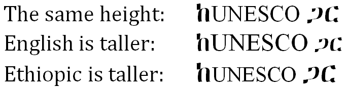
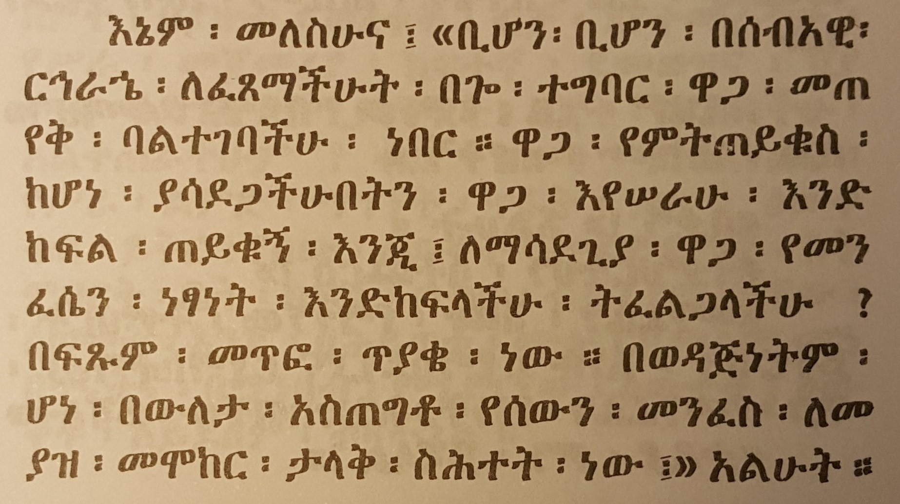
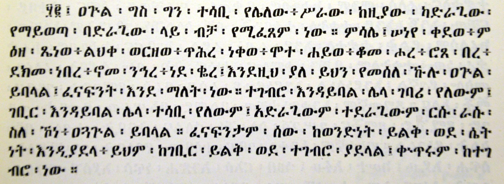
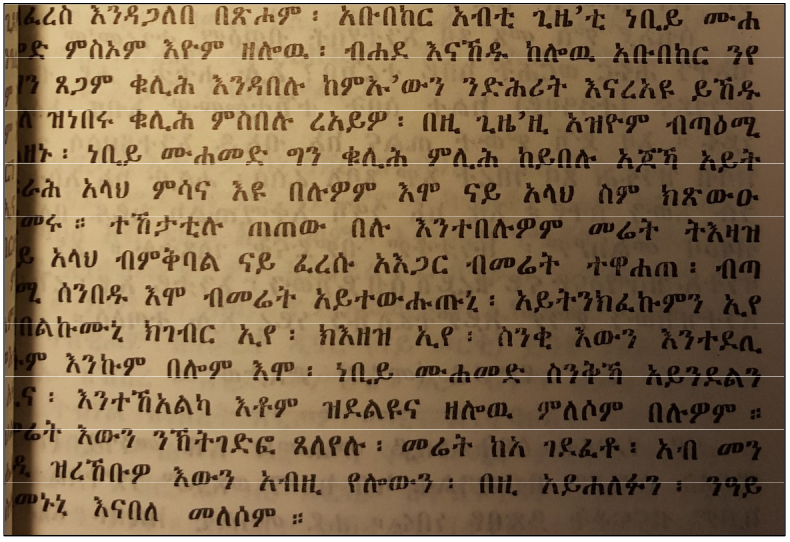

This document describes requirements for the layout and presentation of text in languages that use the Ethiopic script when they are used by Web standards and technologies, such as HTML, CSS, Mobile Web, Digital Publications, and Unicode.
This document describes the basic requirements for Ethiopic script layout and text support on the Web and in eBooks. These requirements provide information for Web technologies such as CSS, HTML and digital publications about how to support users of Ethiopic scripts. Currently the document focuses on Amharic and Tigrinya.
If you wish to make comments regarding this document, please raise them as github issues . Only send comments by email if you are unable to raise issues on github (see links below). All comments are welcome.
To make it easier to track comments, please raise separate issues or emails for each comment, and point to the section you are commenting on using a URL for the dated version of the document.
Introduction
Purpose of this Document
This document describes requirements of the layout and presentation of text in the Ethiopic script for use with Web standards and technologies, such as HTML, CSS, Mobile Web and Digital Publications (e.g. eBooks). In addition to the Ethiopian and Eritrean homelands, the script is widely used througout the diaspora of these two nations. Accordingly, requirements are gathered from stakeholders engaged in Ethiopic publishing from all regions.
The document does not describe implementations or issues related to specific technologies, such as CSS. Instead it describes the typographic requirements of Ethiopic in a technology-agnostic manner, so that the content remains evergreen and is equally relevant to all technologies that aim to represent Ethiopic text on the Web.
How this Document was Created
This document was created by the W3C Ethiopic Layout Task Force. The Task Force will discussed many issues and harmonized the requirements from user communities and solutions from technological experts.
The following types of experts will be involved in the creation of this document:
Ethiopic typography experts
Experts from the publishing industry representing the spectrum of traditional to modern layout practices
Academic experts with a focus on Ge'ez manuscripts and philogy
The Task Force will conduct a survey of the publishing industry to solicit input and identify the set of in-use layout styles. This document will then represent the normalized results of the industry survey which in turn becomes a basis for its validity and suitability to purpose. In the interim before to the survey results have been compiled and applied to this document, tentative specifications will be given based on the most-probable survey results anticipated from participating experts. Survey Pending notes will appear along side specification sections to denote their status.
Basic Principles for Document Development
Growing out of the 182 element Ge'ez language syllabary for two millenia, Ethiopic in its present day form is a multilingual, and multinational, script comprised by 494 symbols representing: syllables, numerals, punctuation and tonal marks. Numerous linguistic, cultural, literary, historical and political issues surround the script and its utilization, all of which the authors strive to avoid discussing unless directly relevant to clarifying a given layout use case. The following principles are applied in the development of this document:
View publishers as the primary stakeholders.
Attempt a "90% solution" where the common and primary needs of publishers are addressed. Important but less widely used practices such as for Yaredic Zaima Notation will be addressed at a future time.
It does not cover every issue of Ethiopic typography, but only the import differences from the Western language systems.
The technical aspects of actual implementation are not covered by this document.
In order to help readers' understanding of how Ethiopic is used, typical real life examples are provided.
Text layout rules and recommendations for readable design are different things, however these two issues are difficult to discuss independently. In this document, these two aspects are carefully separated. The aesthetic design recommendations are mainly described using notes.
The main target of this document is common books. The authors' experiences are mainly related to common books, and the quality required for common books is the highest in the market. There are many kinds of books in the market, and the requirements are quite diverse. The task force has a lot of accumulated experience in requirements and solutions for Ethiopic text composition. Nonetheless, many issues, which have been discussed over a long period of time, are applicable for other kinds of publication.
In terms of frequency of use, the importance of magazines, technical manuals, and Web documents rates alongside common books. However, there are several characteristics in these publications, which are different from common books. These issues should be treated more fully in future documents.
In-Scope Publishing Eras
While Ethiopic documents can be characterized under a number of time periods, we discern only two gross eras in this document. Classical Ethiopic encompases the layout requirements found in the documents of the first printing presses and coming into fruition under the reign of Emperoror Haile Selassie. While not the focus of this document, "Classical Ethiopic" also encompasses handwritten manuscripts whose practices are present in early publishing. This era is characterized more by the influences of the Ge'ez tradition as embodied by the Ethiopian Orthodox Church with respect to spelling conventions, syntax and punctuation use, Ethiopic Wordspace and numeral system preference, less variation in layout practice which is likely the result of having fewer publishing houses in operation.
The Classical Ethiopic era is followed by the Modern Ethiopic spanning from the post-Imperial period up until the present day. Modern Ethiopic practices are characterized by looser spelling practices, the preference change toward whitespace and western numerals, more variation in layout styles
and in some cases limitations imposed by desktop publishing software designed for Western markets.
The focus of this document is on the Modern Ethiopic layout conventions with distinctions pertaining to Classical Ethiopic noted when known. An exception will be a complication that the authors hope to resolve found in Classical era documents where Ethiopic Wordspace interplays with Whitespace in a number of contexts.
Discuss any considerations for when foreign scripts (Latin, Arabic, etc) are used with Ethiopic text. Relative character heights and weights.
Relative Character Heights
In multilingual documents, differences between the heights of letters in Ethiopic script and its companion foreign script are often found.
The difference is likely an artifact of the typesetting technology in use and does not represent the intent of the author or publisher.
In the classic typeface style of Ethiopic script the letters will be of variable heights. Fixed height styles are more generally used for
advertisement and not publishing. The nature of variable height Ethiopic letters is a factor that complicates how to be best align letter height with a foreign script.

Comparative heights of English and Ethiopic script.
At a given point size, letter heights within a script may vary widely between typefaces. This adds another level of difficulty
to aligning heights between scripts as an alignment will only be optimal between a typeface pair. Within a script featuring variable
(not fixed) height letters the relative heights of letters are subject to change between typefaces. This phenomena reinforces the
previous assertion on typeface pair optimization, but also introduces the possibility that alignment optimization can be language
sensistive. This happens when an alignment pair designed for the letter inventory of one language is applied to another language
that includes letters that exceed the heights of the optimized set.
Comparative letter heights.
The relative heights of letters used in different languages may also change with typeface as this next figure illustrates.
Comparative letter heights change with typeface, ቕ of Blin and Tigrinya now exceeds the heights of Amharic.
With these caveats considered, "Zen" alignment is a means to optimize an Ethiopic-Latin typeface pair that is suitable for a general
use case when priori knowledge of a document language is unknown. Its basis is reviewed here.
The Latin letter "Z" and Ethiopic letter "ን" are chosen as pairing symbols representative of the mean height . The both feature broad
horizontal strokes that are easy for the eye to follow as a nearly continuous stroke.
Ethiopic letters that were introduced as an extension to the Ge'ez core will have typically feature a macron on other modifier at the top of
a base letter in order to form the extension letter. The macron necessarily extends the height of a letter. Using the top of the macron
for the reference height of a letter leads to height alignment that makes the majority of Ethiopic letters appear too short against Latin letters.
Alignment and top of symbols (Ethiopic letters too squat).
A better approach is to align Z with caron (Ž) against ን with marcon (ኝ) while aligning and Z with ን and find typefaces with a good tuple of aligned pairings.
Alignment below accent (better sizing).
Going furhter, we may assume that the ኝ and Ž will align satisfactorily (optionally check any irregularities) and simply align the Z-ን pair.
Phonetically the sequence of these two letters would sound like "zen", hence the name.
Z-ን or "Zen" Reference Alignment.
Issues:
What Ethiopic letter should be applied as a height reference point for alignment?
Should height alignment be attempted as per the letter inventory of a target language level or for the script as a whole (practical but less optimal)?
Relative to a Latin uppercase letter, should the height of Ethiopic letters: (a) equal (b) shorter (c) taller?
Is height alignment an issue with other writing systems? If so, how is it addressed?
Relative Typeface Weights
A common practice in Ethiopic literature is the change of typeface weight in one script to appear more visually similar to the other.
Most typically a Latin typeface will be made heavier to better match its Ethiopic counterpart. This weight increase is demonstrated in many
Ethiopic fonts that include the Latin letters. The font designer may have increased the weight of the Latin range primarily to provide heavier
weight punctuation to use with Ethiopic script (see Ethiopicized Punctuation).
Literature produced with a heavier Latin tyepface may represent the author's stylistic sensibilities but in some cases may be only be a
pragmatic outcome when an author finds manually changing between fonts too burdensome.
The view of professional publishers is unknown here and should be determined.
Issues:
When publishing in the classical Ethiopic weight, should English words appear in their default English weight?
If heavier Latin letters are desirable, how much so? Can a weight increase be defined as a percentage of the Ethiopic?
Baseline Alignment
This may only be an issue with pre-digital typesetting systems where Latin text and Ethiopic would appear to be
laid out on different baselines in a line of text. The most common example of this appears in documents produced with a typewriter
where a sheet of paper had to be moved between typewriters to produce a line in two scripts. An apparent baseline difference here
would be the result of mechanical misalignment.
Latin Punctuation with Ethiopic
Discuss Latin/Western punctuation adopted for Ethiopic writing. Ethiopicized (typeface stylized) punctuation. Reference the ES-781:2002 punctuation inventory.
Ethiopicized Punctuation
Modern Ethiopic borrows a number of foreign symbols to denote currency, express emphasis, time, mathematics, or communicate with
Interenet protocols (e.g. "@" , "://" ).
The ES-781:2002 standard identifies the following inventory of western symbols to be used with Ethiopic:
Additionally the following punctuation is observed to be used with Ethiopic writing:
$ : , € @ …
The shape and weight of these symbols are often changed for a better visual fit with an accompanying
Ethiopic typeface. Enhanced foreign symbols are referred to here as "Ethiopicized". While many symbols are borrowed from western writing,
not all necessarily benefit from Ethiopicization. Those that do will primarily be used in a context where the foreign symbol directly
abuts some Ethiopic symbol. Commonly Ethiopic symbols are demonstrated in the following figure:
Samples of Ethiopicized punctuation compared to shapes in a companion Latin typeface.
Issues:
Are there any additional western symbols required for Ethiopic writing?
Are any symbols from other foreign script (Chinese, Arabic, etc) that should be included?
What symbols benefit from shape change?
What symbols benefit from weight change?
Noteworthy for layout correction is that an isolated left double guillemet, », is common in tabular text to indicate that the entry above is to be duplicated.
Optical Balancing
Foreign language words or phrases are regularly found inline within a paragraph of Ethiopic text, often enclosed within
encompassing punctuation such as brackets and quotaiton marks (e.g. []()""''«»‹›). This practice is most often observed in
news articles on international topics. The weight of the encompassing punctuation may found as matching either the Ethiopic
Latin weight. The preference of stakeholders must be determined here. Comparative samples follow:
Latin text enclosed with Latin weight guillemets.Latin text enclosed with Ethiopic weight guillemets.Latin text enclosed with Latin weight quotes.Latin text enclosed with Ethiopic weight quotes.
As a rule within the embedded foreign script, the weight of puncutation and other symbol (numbers, etc) should be in keeping
with the weight of the foreign weight and not that of the surrounding Ethiopic.
Issues:
What do stakeholders feel should be the default weight for enclosing punctuation?
Would preferences change if Ethiopic wordspace were applied in the samples?
Ethiopic Wordspace at Latin Boundaries
Classical era Ethiopic documents do not exhibit a very high degree of consistancy with respect to the presence of Ethiopic wordspace
before or following Latin puncutation. Exceptions to an apparent convention are usually found within an individual document, making internal
consistancy problematic for a work of any significant length beyond 20 pages. It is likely that the lack of a well established convention here
would have kept copy editors and publishers view formatting conformance here as critical. Observed practices are:
Always
An Ethiopic word ends with either a wordspace or punctuation. This rule allows a word to be split across lines without the need for a hyphenation symbol.
Ethiopic wordspace does not precede or follow another punctuation, with the possible exception when preceding a right-side enclosing symbol (brackets and quotation).
Right-Side Enclosing Symbol Convention 1
Ethiopic wordspace does not precede but does follow a right-side enclosing symbol. This appears to be the most commonly used convention during imperial times.
Right-Side Enclosing Symbol Convention 2
Ethiopic wordspace will precede a right-side enclosing symbol but not follow it. In these cases white space generally appears after
the Latin punctuation, this whitespace is however observed as an artifact of justification spacing and does not demonstrate an inserted space symbol.
The figure in this document illustrating centered wordspace justification style provides an example of white space
after quotation. ፍቅር እስከ መቃብር by Haddis Alemayehu is also an easily found reference here.
Right-Side Enclosing Symbol Convention 3
Ethiopic wordspace does not precede or follow the right-side enclosing symbol. This style is observed but some width of white space will appear
outside the enclosing symbols.
[TBD: somewhere in this document mention the mouse text selection rule that a following wordspace should be automatically selected with text, analagous
to the rule applied to white space. MS Word does this.]
Space-Wordspace Substitution Rules
Rules are presented here to aid layout software that would offer the functionality of space symbol conversion to and from
Ethiopic wordspaces.
This functionality is desirable in a viewer application (e.g. web browser, eBook reader) to make the same
substitution as per a user preference. Thus the user would be able to read a document with Ethiopic wordspaces that
was composed and delivered with white space. Likewise in the reverse, a user who preferred white space could have their preference
supported in a document that encodes Ethiopic wordspaces only. Similarly, this functionality would be useful to users of an editor application.
Develop rules for space-wordspace substitution (e.g. context for when not to substitute a space for wordspace).
This could lead to a CSS word-separator property that a javascript could manipulate to toggle the wordspace.
TBD: Test cases should be developed to validate these rules.
Space to Wordspace Transformation Rules
White space symbols other than space (U+0020) are not processed. Issue: how should non-breaking-space be handled?
Space(s) at the start of a line are assumed to be there for positioning and are not processed.
A sequences of one or more spaces is treated as a single space.
A space is substituted for wordspace when bounded by letters, or between a letter and number.
A space is substituted for wordspace on the outside of an enclosing punctuation as per the convention applied in Ethiopic Wordspace at Latin Boundaries.
A space following non-encompasing punctuation is removed.
Space(s) before or after quotation are removed.
Space(s) bounded by non-Ethiopic numbers are not processed.
A wordspace will be appended to the end of line (a line ending with a hard return) that does not end with punctuation.
Wordspace to Space Transformation Rules
A sequence of more than two worspaces is not converted as the author's intent is indeterminate.
A sequence of exactly two worspaces is converted to an ETHIOPIC FULLSTOP (U+1362).
A sequence of exactly one wordspace is convert to space.
A wordspace at the end of a line may be removed.
A wordspace may not start a line.
A wordpsace may not start a sentence.
Wordspace follows letters and numbers only. Conversly: a wordspace may not follow another punctuation or spacing symbol.
An additional wordspace conversion rule that is independent of the above space-wordspace substitution rules: Very commonly in Ethiopic documents
a sequence of two worspaces are found and may be substituted for ethiopic fullstop. This may be considered a defect correction rule.
Note that hyphenation is not required when wordspace is present, words split anywhere, would stakeholders still desire the hyphen nonetheless?
Ethiopic Gemination Mark (ጥበቅ) Vertical Positioning
The Ethiopic gemination mark, ጥበቅ, is almost universally found at a fixed height above the baseline in typeset literature. The marks position must
then be fixed so that it remains above the tallest Ethiopic letter symbol; this produces a variable height gap between the top of the letter and the mark.
Conversely, when the symbol is hand written (often above typeset text) the mark will be found at a varialbe height above the baseline and demonstrating
a fixed height above the letter symbol.
Quite possibly the former style is an artifact of a limitation of the layout technology employed, and the later representative of an author's
desired rendering.
Two gemination styles compared.
Issues:
What do stakeholders feel should be the default style (fixed, floating)?
The same rules apply to the ETHIOPIC COMBINING VOWEL LENGTH MARK (U+135E) and ETHIOPIC COMBINING GEMINATION AND VOWEL LENGTH MARK (U+135D). Stakeholders here (current or past) should be identified.
OpenType shaping logic may be sufficient to handle the issue. Thus a specification here might only be utilized by font
designers and not the layout engine community. This topic is possibly beyond the scope of the W3C layout charter (Richard?).
Ethiopic Numeral Bars
Sequences of Ethiopic numerals, such as years and page numbers, may be written in one of two styles. In the most commonly find style in modern literature
the numerals are written as discrete, independent, symbols. In a second "joining" style of writing, primarily found in calligraphical and handwriting, the numerals
may share a common upper and lower bar. Conceivably the joining style went out of favor as it proved more difficult to support in publishing technology. Modern
preferences should be determined from stakeholders.
Two numeral styles compared.
Issues:
What do stakeholders feel should be the default style (joined, isolated)?
Do stakeholders want the option for both styles?
Are there any context rules to determine when a given style is appropriate?
Lines and Paragraphs
Topic Keywords: Line composition rules, Punctuations, Mixed script text, Paragraph adjustment, Directionality and bidi, Tab setting, Alignment, Justification, Hyphenation, Word/Sentence boundaries, Special cases (e.g. poetry, math, vertical, etc.)
First Paragraph Rule
Paragraph indentation is a modern Ethiopic practice. The initial paragraph of a section is sometimes not indented. This practice may be
idiosyncratic to an author but may represent a convention in use by a publishing house. A best practice supported by stakeholders should be
established here.
Issues:
How much should a paragraph be indented?
Should the first paragraph of a section be indented?
Should a new paragraph be indented following a list?
Are there any other special rules for when to, or not to, indent a paragraph?
Hyphenation
A word is split at a location where the user would not be able to infer from context whether one or two words appears across lines. I.E. a split should not occur at the boundary of a compound word.
When whitespace is the word delimiter, the hyphen symbol should be applied when a word is split over lines.
Numbers are not split over lines.
Words of a single syllable are not split over lines.
Words of two letters are not split over lines.
Only letters, numbers, or opening punctuation may start a new line.
Words are split along a syllable boundary.
A consonant cluster may not be split.
Word Boundaries
Regular rules apply? One consideration for Ethiopic would be that a newline is not a dependable word boundary
in the common case where words are split across lines without a hyphen symbol and white space is the default wordspace.
Word boundaries are known here only by context.
Line Breaking
Formatting of Ethiopic Wordspace
Rules of Formatting the Ethiopic Wordspace-Punctuation Boundary
The intent of this section is to discuss when white space (and what width) can be added to documents using Ethiopic wordspace.
Examples of when this is found to occur (some of these topics are discussed elsewhere):
indentation
following a list item marker
within a numeric sequence, like a phone number
within a date format (sometimes, not always)
within a scripture reference (sometimes not always)
before and folowing quotation marks
folowing an elipsis (?)
within a block of embedded foreign script
[image samples needed]
Justification
Since the arrival of the printing press to Ethiopia in 1863 (Pankhurst, 1998), full justification of Ethiopic has been a common typesetting practice in Ethiopian, and later Eritrean, publishing houses. Earlier, Ethiopic justification rules are a feature of Hiob Ludolf’s Historia Æthiopica which is noted as the first use of movable type for Ethiopic script (Ludolf, 1681). Prior to letterpress typography, calligraphic manuscripts rendered on parchment also featured full, or approximately full, justification. Though the latter likely reflects the scribe’s desire not to waste a millimeter of available lateral writing space.
Two predominant forms of Ethiopic Justification developed and would be of value to the present day user community. Each form in turn has two sub-modes that govern spacing following an Ethiopic Full Stop. Both forms and sub-modes are discussed here.
Ethiopic Justification in Historia Æthiopica (Ludolf, 1681)
Justification with Left Bounded Wordspace and Punctuation
In keeping with line justification for Latin script , the non-printed or “white space” between words is treated as stretchable. The width of the space symbol itself will be elongated to some aesthetic width value that may vary from space symbol to space symbol across a printed line. In Ethiopic justification , the white space between the Ethiopic word separator and the words it separates is likewise allowed to stretch. This stretching of white space may be either symmetrical (“centered”) or asymmetrical but in the latter case space stretching is always between the right side of the separator and the following word –referred to here as “left bounded”.
In “left bounded” justification the word separator, which may be either a punctuation symbol or U+1361 ETHIOPIC WORDSPACE [፡], appears to adhere to the word to the left as if it were its final character.
Ethiopic justification in left bounded style (Erikson, 1921 (1913 EC))
Justification with Centered Wordspace and Punctuation
In the second major form of Ethiopic justification the white space around word separators is stretched equally on both the left and right sides; giving the appearance of the separator being centered between the words it divides. depicts the white space stretching in both forms of justification using Ethiopic Wordspace as an example, though the stretching rules apply equally to Ethiopic punctuation as well.

Ethiopic justification in centered style (Gubenya, 1973 (1966 EC)).
To further illustrate the justification spacing applied to both Ethiopic punctuation and wordspace, presents white space stretching from the point of view of the symbol’s typographic bounding box. Here the “design white space”, the space between the visible symbol and the box border, is itself stretched as needed to meet line justification:
Depiction of white space around Ethiopic wordspace for three modes of text justification.
Spacing Threshold Following Full Stop
In the regular mode of Ethiopic justification (both forms) U+1362 ETHIOPIC FULL STOP [።] will be treated equally with all other punctuation symbols. In a second mode, the Ethiopic full stop will have special spacing rules applied to it whereby more separation space is allowed following the symbol and the start of the next word. In a sense, the right side space of the full stop is “more elastic” than in the regular mode. The elasticity rule and the visual effect are similar to that of the final line of a fully justified paragraph in Western text. When the final line of a paragraph of Latin script crosses a certain horizontal threshold, the line will become fully justified. Below that threshold the line will appear left aligned. The same rule appears to be applied to the Ethiopic full stop but on any line of the paragraph. An illustration of this sub-mode is depicted in the following:
Shortcomings Found in Electronic Typesetting Systems
To date, computer software that typesets text has applied justification rules for white space stretching that were designed to meet publishing requirements in the Western world. When the same rules are applied to Ethiopic text, the results are unsatisfactory as they do not meet user expectations. Largely responsible for the formatting dissonance when Western justification is applied to Ethiopic text, is the absence of a white space symbol in the writing system. There is no explicit white space symbol (in classic Ethiopic writing) to be “stretched”.
Formatting algorithms will then process U+1361 ETHIOPIC WORDSPACE [፡] as a punctuation symbol where word binding rules, rather than word spacing rules, will be applied. While still stretchable, “white space” in the Ethiopic wordspace is implicit rather than explicit. For a complete solution, software will ultimately need to be enhanced to stretch implicit space as required. Reclassifying the Ethiopic wordspace as a “Zs” symbol is expected to help alleviate justification issues and clears the way for software firms to implement comprehensive support for Ethiopic justification. Since the Ethiopic wordspace interferes with justification in present day software, users may opt not to use it or may “pad” wordspace and Ethiopic punctuation with explicit white space to obtain the formatting desired. The following samples depict formatting of Kidane Wolde Kifle’s seminal work Maṣḥafa Sawāsew with a popular word processor (Kifle, 1955 (1948 EC)) under the limitations of Western spacing rules justification.

Full Justification Sample from Maṣḥafa Sawāsew, Page 65 (Kifle, 1955 (1948 EC))The sample from the previous figure with a 12 point font and fully justified by Microsoft Word 2010 within a 6.5 inch margin with line-breaking rules applied. No spaces (U+0020 ) in sample. The sample from the earlier figure with space (U+0020) replacing Ethiopic wordspace. Space characters have additionally been added following Ethiopic punctuation.
In digital documents such as in web pages and eBooks, it is recommended that the appearance of either U+0020 SPACE [ ] or U+1361 ETHIOPIC WORDSPACE [፡] be configurable as a user preference. An easy to access “space” toggle button would enhance a viewing application’s usability.
Ethiopic Semi-Justification
“Semi-justification” is mentioned here as a historical note and to provide an interpretation of formatting observed in hand written manuscripts. In “semi-justification” the line spacing rules of either mode of Ethiopic justification has been used, however, the text does not necessarily align perfectly flush with the right side margin. This practice is depicted in the following sample (Brita, 2012):
In recent decades some communities have adopted a practice of employing the wordspace symbol as a comma when U+0020 SPACE [ ] is used as the word separator. The interpretation of the symbol is then dependent on the context of the writing convention in use by the author. Accordingly, an application user setting could be offered to set the symbol context.
An alternative view point on this practice is that U+1363 ETHIOPIC COMMA [፣] is in fact in use by these user communities; however its glyph has decayed whereby the line segment is lost and so it visually coincides with U+1361 ETHIOPIC WORDSPACE [፡]. Under this perspective, a simple solution would be modify an Ethiopic font for these users (perhaps adding an alternative glyph in an OpenType stylistic set) where the Ethiopic comma character address and semantics remain intact though the visual form has been tailored to meet aesthetic needs.

Ethiopic Wordspace in the context of co mma (Abubeker, 1987 ( 1979 EC))
Lists and Counters
Bullet Lists
Bullet lists are utilized regularly in Ethiopic literature. Authors using a computer or typewriter will work with the list marker
symbols made available by their software or machine. Many marker, or "bullet", symbols are accepted for Ethiopic literature though not all
will be considered optimal.
Circle bullet size relative to letter height.
Square bullet size relative to letter height.
Diamond bullet size relative to letter height.
TBD: Expand the size comparisons: 60% 70% 80%. Produce samples with comparative distance of bullets from letters
Issues:
What are the preferred bullet shapes?
What are the preferred shape sequences in nested lists?
What is bullet height and width relative to letter dimensions?
What is the default distance of the list item text from the bullet?
Are lists indented (left margin)? If so, how much?
Examples are needed for pre-digital, classical, literature.
Diamond shaped bullets are found commonly and may represent a desired default.
The Unicode standard provides a number of similar diamond shaped symbols. From this set of diamond symbols, those suitable for adorning Ethiopic bullet lists must be determined.
Do copy editors or publishers set a policy for list symbols, or leave it up to the author to decide?
Of interest: when are bullet lists first found in Ethiopic writing and in what form?
Ordered List Item Marker
In Ethiopic ordered lists a number of symbols are used for the list marker (suffix).
For example "፦" , "." , ")" and even "፡" (Ethiopic Wordspace).
Issues:
What are the preferred list marker symbols? What is the best default?
How much, if any, white space follows the suffix?
Do copy editors or publishers set a policy for list item markers, or leave it up to the author to decide?
Of interest: when are ordered lists first found in Ethiopic writing and in what form?
List Item Marker Alignment
Ethiopic corpus will present lists with two styles of alignment. These are a left side alignment at the
list counter, or alignment along the list marker (suffix). Layout software will align a list at the marker in
keeping with the later style. The former style (left justified at counter) may reflect a limitation of the
layout technology employed and not a preference of the author, copy editor or typesetter. A depiction of these
two alignment styles is presented in the following figures:
Alphabetical list aligned justified on counter left.
Alphabetical list aligned on marker.
Issues:
What alignment style(s) do stakeholders desire?
Inline Lists
How much space after marker? Is the space after marker the different when Ethiopic wordspace is in use?
Ethiopic inline list sample using wordspaces with 3 spacings (none, hair and thin) following list marker.
Ethiopic inline list sample using spaces with 3 spacings (none, hair and thin) following list marker.
Numbered Lists
Ethiopic literature will apply ordered numbered list using both Ethiopic and Western numeral systems. Ethiopic numeral
lists are addressed in the
Ethiopic Numeric Counter Style
section of the CSS Counter Styles Level 3 specification.
Issues:
What is the list item marker preference with Ethiopic numbers?
What is the list item marker preference with western numbers?
Are there any sublist (nested list) considerations?
Alphabetical (ሀለሐመ) Lists
The Unicode standard encodes Ethiopic syllables for many languages using Ethiopic script past and present.
Alphabetic lists are commonplace in Ethiopic literature, but will conform to the letter inventory of the language of the surrounding content.
The alphabetical style lists specified here do not encompass all languages using Ethiopic, but only those with a demonstrated requirement as found in corpus or stakeholder input.
Wrap to next column, e.g.: ... ፈ ... ፐ ... ሁ ... ሉ ...
With any approach, how is the end of matrix handled?
አበገደ Lists
The አበገደ ordering of the Ethiopic syllabary is an alignment with the Coptic and Greek alphabets possibly to
fascilitate interdenominational communication or for the transfer of gematria practices.
The ordering is used today largely for pedagogical purposes and has been used by some authors for the collation of
entire works such as dictionaries. More often authors will apply the ordering for list orders.
The አበገደ ordering is potentially desirable to any language using the Ethiopic syllabary.
The ordering is less likely to be found in the writing traditions of languages that have a written tradition of under a hundred years.
The language specific orders orders shown here are only those found utlized in corpus.
Wrap to next column, e.g.: ... ጰ ... ፐ ... ቡ ... ጉ ...
With any approach, how is the end of matrix handled?
Inline End of List Continuation
An observed formatting practice is the start of a following paragraph inline with the last list item.
The paragraph may flow immediately from the last item, or some indentation may be applied. This practice is illustrated in the following figure:
Sample for inlined paragraph continuation at end of list.
Issues:
Is this an older style? Idiosyncratic to a few authors? The desired norm?
When appropriate, what is the width of the paragraph offset (if any) from the final list item?
Pages
Topic Keywords: Basic common templates, Page elements, Page-level directionality, Bidirectional characteristics, Arrangement of elements, Text columns, Header, Footer, Illustrations, Tables, Page numbers, Margins, Positioning and arrangement of content, Pagination rules, Specimens and examples.
Document
Topic Keywords: Distinguished requirements: book/ebook/page, Inter-page spacing, first and last pages, TOC and lists, indexes, appendices (e.g. bibliographies, glossaries), endnotes.
Other
Literature best practices of interest for the survey that are not know to be layout topics
Abbreviation formation
Abbreviations in Ethiopic languages will apply an abbreviation marker ("/" or ".") placed between the first letters of each word in a phrase.
Single word abbreviation that applies a right side truncation (vs mid) will apply a "." as the abbreviation maker.
In a multi-word abbreviations the last word may remain whole. Two letter words are only be abbreviated in a multi-word abbreviation.
Examples: Single Word
ሚኒስትር ⇒ ሚ/ር
ሆስፒታል ⇒ ሆ/ል Multi Word
ጠቅላይ ሚኒስትር ⇒ ጠ/ሚ/ር
ኢትዮጵያ ኦርቶዶክስ ተዋሕዶ ቤተ ክርስቲያን ⇒ ኢ/ኦ/ተ/ቤ/ክ
Issues:
When "." is used as the abbreviation marker, it is sometimes found at the end of the abbreviation.
Confirm single word abbreviation rule.
Are mixed abbreviation markers appropriate? Some well established abbreviations apply a "." as the marker, for example
"አዲስ አበባ ዩኒቨርሲቲ" becomes "አ.አ.ዩ". This may reflect the chosen convention of the institute.
What symbol is applied for foreign words transcribed into an Ethiopic languages?
Do copy editors or publishers set a policy for abbreviation, or leave it up to the author to decide?
Of interest: when are abbreviations first found in Ethiopic writing and in what form?
Ordinal Notation
An ordinal is formed in Amharic when "ኛ", and in Tigrinya when "ይ", follows a cardinal number.
The ordinal marker is often, but not always, rendered in superscript form. The superscript practice is most prevalent with ordinals
in western numerals, but is also applied with Ethiopic numerals.
Issues:
What letters should be superscripted, and it what contexts? For example, "ሳ" and "ብር" may also be superscripted in
presentation of prices but is not common in print (found mostly in store front advertising).
Always superscript? Language or locale specific? As a setting?
An argument goes that superscript of "ኛ" should not follow an Ethiopic numerals since the counting system is put into a Ge'ez context
and Ge'ez literature does not use a superscript. Yet "ኛ" is appropriate to Amharic language and is not a letter found in Ge'ez. The class of
literature may be at issue here, such a religious materials.
Ethiopic Comma Usage
Rules of usage for the two Ethiopic commas. Note language specific conventions.
፣ - ነጠላ ሠረዝ
ETHIOPIC COMMA (አማ/ ነጠላ ሠረዝ, ትግ/ ንጽል ሰረዝ) is used as a comma in Ethiopian practices and as a semicolon in Eritrea. ፣ will also be
used in Ge'ez writing as a semicolon (is this a modern usage or classic?).
ETHIOPIC SEMICOLON, ፤, in turn is used as a colon in Eritrean writing (verify).
፥ - ንዑስ ሠረዝ
ETHIOPIC COLON in contrast to its Unicode name, is never(?) used as a colon in any known Ethiopic practices.
Rather, it is a classical glyph variant of ETHIOPIC COMMA (፣). ፥ is the default comma glyph in Ge'ez writing and is the preferred
comma glyph by some modern writers writing in other languages. ፥ is the default comma in most Amharic bibles, likely in keeping with
the Ge'ez Bible that the Amharic would have been translated from. Some modern Bible translations into Amharic, as well as other religious
literature, will use ፣ as the default comma in prose but maintain ፥ for passage references, e.g. ማቴ4፥23 , ዮሐ13፥16 , etc. Given this
common usage in religious materials "ecclesiastical comma" is a practical English term for referring to the ፥ glyph variant. Kidane Wolde Kifle and Desta Tekle Wolde note the equivalence of the two commas.
፡ - ንዑስ ነጥብ
ETHIOPIC WORDSPACE (አማ/ ሁለት ነጥብ, ትግ/ ክልተ ነጥቢ) in keeping with Ge'ez heritage, is used as word separator (i.e. space) in the classical writing practices
of both Eritrean and Ethiopia. In in modern Eritrean writing practices in the role of a comma.
When used in modern Ethiopian writing, it retains its classic role as word separator (space).
, - comma
COMMA is utilized in Eritrean and Ethiopian writing practices in the formatting of western numbers only.
Parenthetical Expressions
Parenthetical expressions are found regularly in modern Ethiopic writing and will apply any of the bounding symbol pairs:
// , () and [].
Issues:
What are the preferred parenthetical bounding symbol pairs for modern writing?
Do special rules apply for inner expressions.
Do copy editors or publishers set a policy for parenthesis symbols, or leave it up to the author to decide?
Of interest: when are parenthesis first found in Ethiopic writing and in what form?
Quotation
Classical Ethiopic literature applying quotation marks will employ double guillemet (« ») in a primary style and single
guillemets (‹ ›) in a secondary style. Single guillets will be used for inner-quotation and single word quotation.
Modern Ethiopic writing will additionally utilize Latin quotation marks similarly (“ ” ‘ ’, U+201C, U+201D, U+2018, U+2019).
The choice of Latin script quotation may represent either an author preference or a software limitation that made quillemets
unavailable or difficult to access.
Issues:
What are the preferred quotation marks for modern Ethiopic literature?
Is the single quotation mark usage statement correct?
Do any other rules apply to quotation usage in Ethiopic writing?
Do copy editors or publishers set a policy for quotation mark choice, or leave it up to the author to decide?
Of interest: When are quotation marks first found in Ethiopic writing and in what form?
Letter Spacing
Any number of kerning pairs and ligatures are possible for Ethiopic typography that would lead to better
visual quality of printed litterature. While beyond the present scope of this task force it would be beneficial
for setting the direction of future work to raise the topic with stakeholders to gauge the level of
interest here. Producing visual samples (common lone words and full paragraphs) would help in the discussion
of this topic.
Glossary
Term
Amharic
Tigrinya
Definition
text block
aslkjafs
lkjlasd
The part of the page normally occupied by text.
justify
aslkjasd
fqlkj
To adjust the length of the line so that it is flush left and right on the measure.
measure
oqepo
ooos
The standard length of th eline; ie. column width or width of the overall textblock.
Acknowledgements
Special thanks to the following people who contributed to this document (contributors' names listed in in alphabetic order).